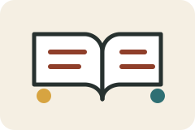

首页 / 高二语文 / 试卷讲评
试卷讲评栏目用于保存考试复盘、题型归类、典型错误、解题思路和变式训练。
按年月建立文件夹，如 2026-09-yuekao。
保存整卷分析、失分点和订正任务。
用于阶段复盘和假期前查漏补缺。
适合短平快讲评和专项纠错。
现代文、古诗、文言文、语言文字运用等专项。
不要上传包含学生姓名、班级、成绩、答卷照片等可识别个人信息的材料。需要展示学生答案时，应先匿名化处理。